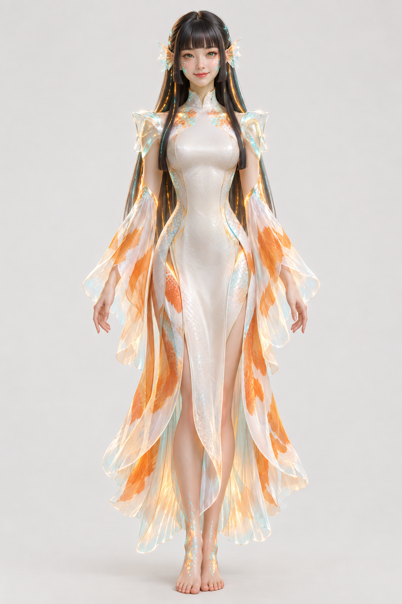

¡Hola!
Pendientes
Añade asignaturas en para saber a qué dedicas el tiempo.
Pomodoros de hoy
Cada pomodoro de enfoque terminado se guarda solo en Rendimiento. Tras 4 seguidos toca descanso largo. Puedes cambiar de pestaña: el tiempo sigue contando.

Tu siguiente paso,
más claro.
Una entrega cerca, una asignatura que necesita atención o un momento para concentrarte. Tu asistente te ayuda a decidir por dónde empezar.
- Prioriza lo importante
- Tus fechas de entrega marcan qué tarea conviene abordar primero.
- Encuentra tu ritmo
- Sesiones de enfoque adaptadas a los minutos que has elegido.
- Cuida tus asignaturas
- Las medias de tus notas ayudan a identificar dónde dedicar más atención.
Vista previa de KYO IA. Las sugerencias actuales se calculan en este navegador con reglas locales, sin IA generativa ni envío de datos.
Un plan para ahora
Copia de seguridad
Descarga tus datos en un archivo JSON o recupéralos desde una copia. Importar reemplaza los datos actuales.
Guardado en este navegador
Borrar todo
Elimina tareas, asignaturas, notas y sesiones de este navegador. No se puede deshacer.
¿Seguro que quieres borrarlo todo? Te recomendamos exportar una copia antes.